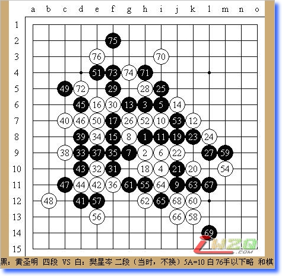
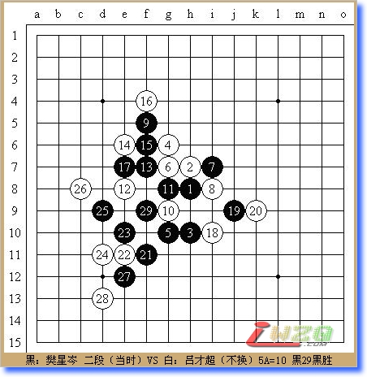
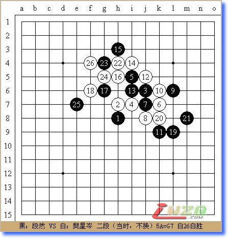
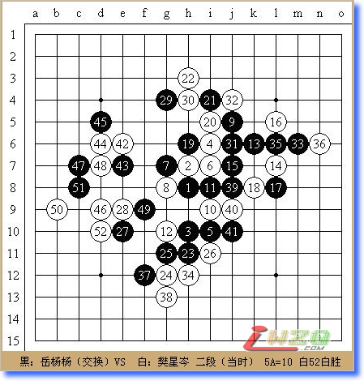
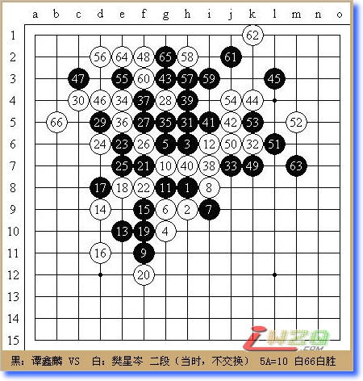
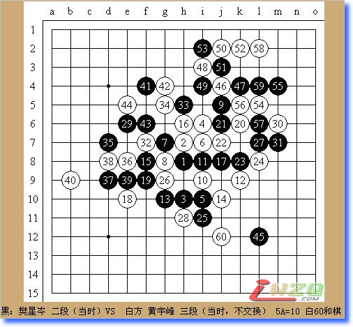
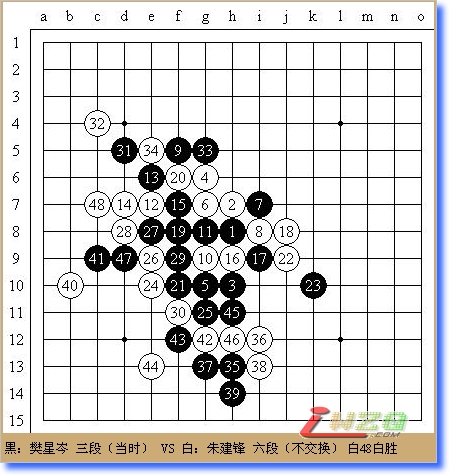

在因为身体问题错过了两次全国赛后，我终于在今年国庆踏上了去天津的征程。赛前我给自己定的目标也很简单，就是超过上次全国赛的名次，进入前15名。
我在大赛第一轮抽签的运气一直很糟，这次也不例外，一上来就和黄圣明碰上了。听说他准备了松月和斜月的变化，目标是进入前六，赛前我还是有一点紧张。没想到他开出瑞星而且选择了13活三的大定式，我对55手之后的变化并不了解，象征性的攻了几手就转入了防守，74如果挡在左边，75在g3做一手，白危险，76之后基本进入必和局面，最后下到160多手终于和棋。虽然第一盘没怎么活动开就和了，但是在黄圣明这样的对手那里拿到半分也是可以接受的。

下午第二轮对手是吕才超，他参加了今年的浙江赛，成绩并不理想，不过我中午看了他在浙江赛的棋以后发现事情并不是那么简单，他输的棋基本上都是疏星黑棋，说实在的要是让我疏星执黑棋下那么多盘可能也是倒数的名次。比赛开始后我决定还是开瑞星稳扎稳打。吕才超不愧为天使，落子姿势很优美，有点像前复旦美女围棋手唐莉：）白14，16次序有误，当时我很想下17-i11，但是看到白可以l10跳冲四强争先手就选择了通回定式的稳健走法。实际上由于黑下面的牵制白在上边根本攻不动。白20弱防，应下h4通过进攻来解消黑棋的优势。左下的棋形本来就是黑很优的局面，而且又多了15，17的二，21后黑必胜了，22又是弱防，以下黑简单杀。

在得知第二天第一盘对手是段然之后我就上网去看了他去年全国赛的对局，发现他开的全是斜月，为防被骗看了一晚上的斜月变化，谁知第二天他很快开出疏星，大鱼在2004年全国赛用这个5和我下过一盘，那次从11手开始摸瞎，这次则是从13手开始摸瞎。14、16的下法弱了，18后黑如果直接19做棋是抢不到先手的，但是只要先在左上交换两手再走19就是明显优势了，实战中段然不假思索地下了19，21，我带着疑惑验算了一遍发现上边确实是VCT了，随后段然又飞快地防了几手后投子。感觉这盘棋“快棋手”是输在轻率上，他全盘仅用时12分钟，而其中迟到和中途离开就有将近10分钟。

第四轮迎战河南的岳杨杨，今年下了这么多盘瑞星终于碰到一个交换的。我选择了一个不易下和的变化，白20时我考虑过到下面强攻，因为没有成算决定放弃。岳杨杨的进攻能力似乎不强，从27就开始露骨地防守。34，38都是为了先手解消这一带的余味以便在左上发动总攻。最后黑47败着，应直接下49较强，48后白必胜。

我在大赛的第五轮常常会有不错的发挥或运气，这次全锦赛也是如此。这轮的对手是来自湖南的谭鑫麟，他之前已经战胜了黄圣明和组长，具有很强的实力。他开出瑞星之后我决定还是照搬上一轮的下法，事实证明我对这个变化还是缺乏了解，24跳三恶手，直接下26唯一，黑25之后不但必胜而且连强防都难找到。26无奈的选择，黑只要下27-c7、29-d5、31-e5就是简单杀，实战27-31之后的棋形也非常恐怖，32，34最强抵抗。事后用黑石拆解35-j6必胜，不过实战中要算到这一步相当困难。黑43活三时白44，46冲掉两边再挡住48黑居然无杀，局面顿时无法收拾。63这一手没有VCF，白在左上简单杀了。这真是死里逃生的一局。

五轮积4.5分之后我非常希望能和曹冬或仇云飞拼上一盘，可惜事与愿违还是抽到了43。43的棋属于非常稳健又对定式很熟的那种，无论下哪种棋这样的对手都是很让我头痛的。1-28手和旁边曹冬对仇云飞的一局完全相同，29稍微变了一下，30，32的防守非常干净，此后黑棋再无取胜的机会，小心翼翼地防了几手后成和。

第七轮我又非常不幸地抽到朱建锋，没办法只好拼一下了。这个白12的变化我下过几盘，但20挡中间却从未见过。由于面对朱建锋这样的对手我完全没有后半盘守和的自信，黑21下的有些急了，迈出了失败的第一步，21还是控制一下为好。22，24后黑已经很难下了，25继续进攻，26-34基本是单行道，35时我认为白跳三最强，36，38后我以为杀了，没有注意到白的眠三，被白造长连后黑棋形崩溃。通过这盘我感受到自己和一流高手还是存在相当明显的差距的。

第七轮走出赛场时，朱建锋告诉我葛帅局面占优，我应该不会再碰到自己人了。没想到葛帅输给了43然后又和我遭遇了```吐血```双方很快走到12，我知道以葛帅的棋风是肯定不会下13活三的大定式的。然而对这